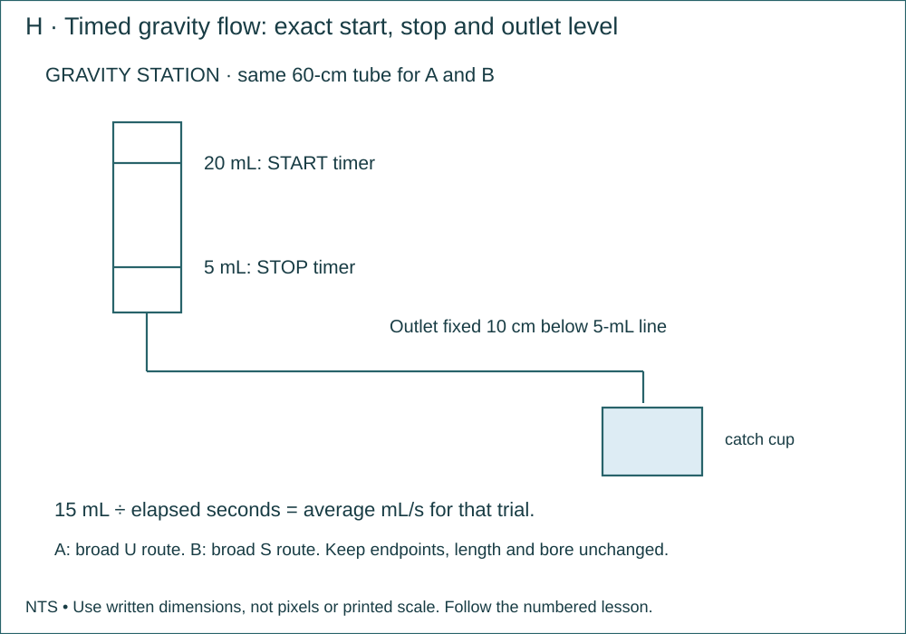

ETF Project 3 · fluid motion, fabrication, diagnosis and measured redesign
P3 · 03 · Measure Flow Through Two Tube Routes
At the prepared gravity station, time 15 mL of water through straight and curved routes; then secure a smooth tube route on the sled.
Name: __________________ Date: __________ · 110 minutes
Why this job?
Pipe work requires quantities and rates as well as a route drawing. A fair comparison controls starting head, tube and outlet height.
Daily kit · one crew
Each student: tape measure, pencil and graph notebook. Per crew: ruler, scissors and masking tape. Existing sled. Shared station: 20-mL syringe barrel with plunger removed, stand/clamp, the same 60-cm tube for both routes, catch cup, water tray, ruler and stopwatch.
Finished means
- A secured tube route on the sled and two measured route drawings.
- Six actual rates with conditions and a comparison limit.

Brief · 10 minutes · Today’s exact job
- Why this job: Pipe work requires quantities and rates as well as a route drawing. A fair comparison controls starting head, tube and outlet height.
- Required today: At the prepared gravity station, time 15 mL of water through straight and curved routes; then secure a smooth tube route on the sled.
- Look at the supplied labeled drawing. Find the finished object or test setup before starting.
- Read the kit list. Take the listed continuing project out of storage; name missing items before beginning.
Notebook: Title/date; one sentence naming today’s exact object and its purpose.
Measure · 15 minutes · Measure and mark
- Measure the reservoir 5-mL-line-to-outlet vertical drop as 10 cm and secure outlet at that height.
- Measure the same tube’s actual length 60 cm. Record bore only if the kit states it; do not guess from outside diameter.
Notebook: Feature | required value | actual value | units | datum/endpoints. Keep repeat readings.
Plan · 15 minutes · Read the plan and work the math
- Sketch route A as one broad U and B as a broad S, with identical inlet/outlet locations and no uphill crest trapping air.
- Make table: route | trial | volume 15 mL | time s | rate mL/s. Three trials for each route.
Notebook: Use the named sketch/table in the directions. Label views, dimensions, units and revision.
Worked example · practice values
These supplied values teach the method. Build from today’s required plan dimensions; record your own actual test data.
- A collection trial produces 180 mL in 15 s. Find the average flow rate. At that average rate, how long would collecting 240 mL take?
- 180 mL in 15 s = 12 mL/s. At that average rate, 240 mL would take 20 s.
- A falling reservoir changes pressure head; the reported value is the trial’s average.
Build along · one move at a time
Maker acts. Checker compares with the plan. Swap at the pause. Use the complete numbered directions below.

Set the outlet 10 cm below the 5-mL line. Keep that position unchanged for the trials.

Start timing at 20 mL and stop at 5 mL. Record collected volume and elapsed time.
After three route-A trials, change only the tube’s middle from a broad U to a broad S. Keep length and endpoint heights fixed; record three more trials.

Calculate 15 mL ÷ time for each valid trial. Then reconnect the teacher-checked water pair and run three strokes.
Make · 45 minutes · Numbered bench directions
- Teacher clamps the upright barrel and secures tube outlet over a cup in the tray.
- Fill tube completely with water first. Pinch the tube gently near its outlet while filling reservoir above the 20-mL mark.
- Release. Start the timer as the level crosses 20 mL; stop at 5 mL. Do not touch the reservoir during flow.
- Refill and repeat twice. Rotate reader/timer/recorder; pairs share the recording role.
- Rearrange only the middle of the tube into route B, maintaining length and both endpoint heights. Repeat three trials.
- Calculate 15 ÷ time for each valid trial. A tied result is acceptable; hand timing limits small comparisons.
- Reconnect the teacher-checked water pair on the sled. Route its tube in a broad untwisted loop and tape a loose guide to keep it away from the moving sled.
Notebook: Label made parts and note any changed dimension. A short labeled sketch is enough; do not write an essay.
Test · 15 minutes · Test and inspect
- Three valid timed trials per route; same marks, tube and outlet height. Mark spills or bubbles invalid and repeat.
- The sled still performs three strokes after reconnection. Gravity-flow results do not directly predict syringe-machine speed under hand pressure.
Notebook: Copy the specified trial table; include each pass/fail or measured value and the change made.
Explain · 10 minutes · Show the finished work
- Put these on the bench: A secured tube route on the sled and two measured route drawings.
- Six actual rates with conditions and a comparison limit.
- Complete the independent transfer problem below. These supplied numbers are practice values; they do not change the required build dimensions.
- A system collects 200 mL in 25 s. Find average flow rate and identify two conditions to hold constant when comparing a second tube.
- Save one short individual answer with units, working and notebook page/date. Show the teacher your own physical measurement and plan interpretation. Store the labeled project and return shared supplies.
Notebook: Individual transfer calculation with units + page/date containing the practical evidence.